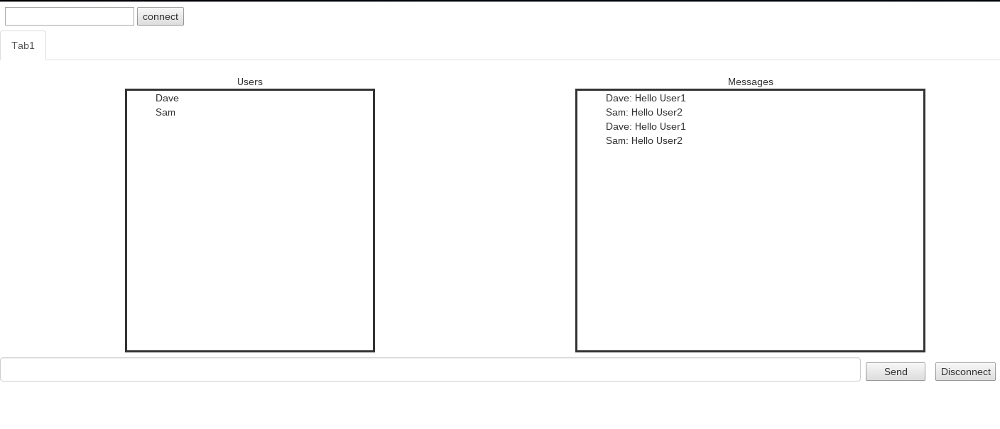

Below is a sample interface of SecChat. The chat interface is not much different than you would expect from a chat program.
The top left corner contains a textbox in which users can type enter a userid of someone they know. This will send a request to the targer user to ask if they would like to communicate with you.
The tab underneath the connect dialog contains a chatroom containing information about the users in the chat, along with a screen for displaying messages. Users can have multiple tabs open, thus chatting with multiple groups of people at the same time.
The 'Users' list contains the userids of everyone in the current chatroom.
The 'Messags' list displays the current conversation, much like you would expect from a typical chat program.
Finally, the bottom of the interface contains a textbox that the user can type into to send messages into the current chat room. The disconnect button disconnects the user from the chatroom that is currently open.
Want to learn more? Click here to see our FAQ.